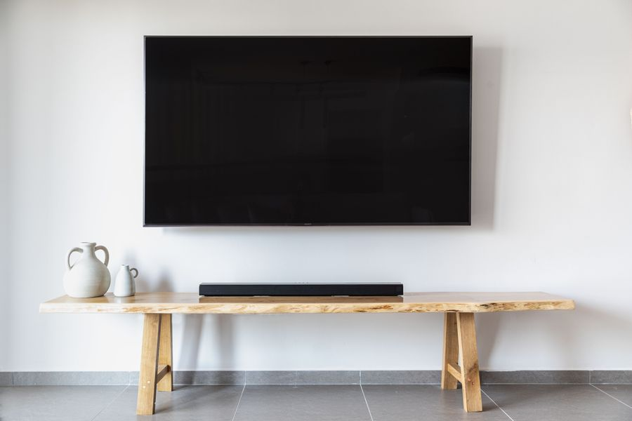

El mejor
Si quieres una sola compra que resuelva el sonido del salón durante años y puedas ampliar sin tirar nada, es esta.

| Amplificación | 5 amplificadores digitales de clase D |
|---|---|
| Altavoces | 4 de rango completo y 1 tweeter |
| Formatos | Dolby Atmos (procesado, sin altavoces al techo) |
| Conexión | HDMI eARC |
| Medidas | 651 x 69 x 100 mm · 2,8 kg |
| Micrófonos | 5 de campo lejano |
Datos de la ficha oficial del fabricante (sonos.com — Beam (2.ª generación)), consultada el 2026-09-02. No publicamos ningún dato que no podamos comprobar ahí.
No ponemos precios porque cambian cada día. Lo ves actualizado al entrar.
¿Comparándolo con otros? En la guía de las mejores barras de sonido en calidad-precio están las cuatro opciones de la categoría: la mejor, dos de gama media y la mejor barata.